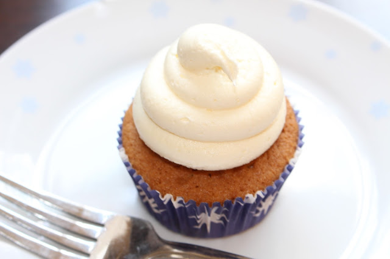

Vanilla Cupcakes with Buttercream Frosting

Description
This is the best vanilla cupcake with vanilla buttercream frosting that i've ever come across; and it's all thanks to Cupcake Jemma. These cupcakes come out moist and flavorful every time.
Ingredients (cupcake batter):
- 125g self raising flour
- 125g caster sugar
- 1/4 teaspoon bicarbonate of soda
- 125g soft, unsalted butter (very soft)
- 2 large eggs
- 1 1/2 tbsp milk
- 1/4 tsp vanilla extract
Method:
- Preheat the oven to 170°C and line a cupcake/muffin tray with 12 cases.
- In a sieve over the mixing bowl - add the flour, caster sugar and bicarbonate of soda and sift them.
- Add 125g of butter.
- Add 2 large eggs.
- Start the mixer on a low speed until everything is just mixed and then turn up to medium to high for 1 minute.
- With the mixer on a low speed add the milk and vanilla extract.
- Put the mixer back up to medium to high speed for one last blast (about 30 seconds).
- Stop the mixer, remove the paddle and get as much batter off as you can. Scrape the sides with a spatula and give a final mix with the spatula to catch anything missed by the paddle at the bottom.
- Using a dessert spoon and teaspoon scoop the batter into the cupcake cases
- Bake for 22 minutes in the pre-heated oven. Check with a skewer - it should come out clean.
- Leave in tray for 5-10 minutes and then transfer to a wire cooling rack.
Ingredients (frosting):
- 200g very, very soft butter
- 450g sifted icing sugar
- 2 tbsp milk
- 1/2 tsp vanilla extract
Method:
- Add the butter to a mixer and beat for 2-3 minutes on a medium speed.
- The butter should now look very pale (edging on white) and be fluffy.
- Add half the icing sugar to the bowl with the butter and start the mixer on a low speed.
- Once its incorporated turn the mixer up to medium speed and beat for 2-3 minutes.
- Add the last half of the icing sugar and again start on slow, then once mixed together, increase speed to medium and beat for another 2-3 minutes.
- Turn down to a low speed and add the milk and vanilla extract.
- Turn back up to a high speed for 1-2 minutes.